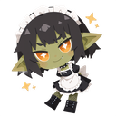

PathMaidGoogle Drive
Return to PathMaid.
Finish connecting Google in the app. Use the button below to return to PathMaid.
Open PathMaidYour browser may ask permission to open the app. If nothing happens, switch back to PathMaid manually.